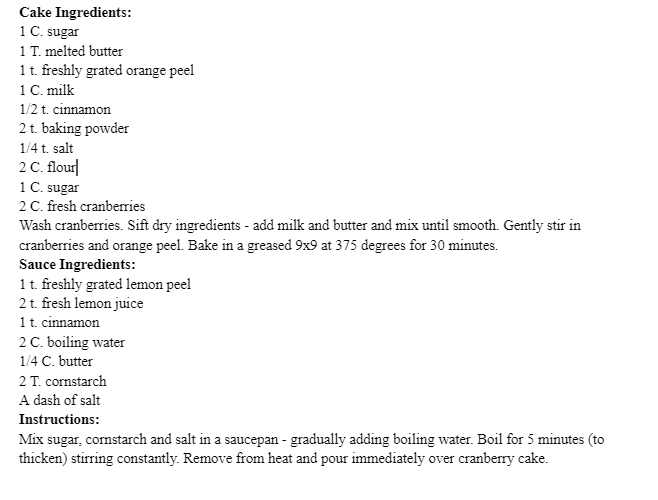

To me, this cake is Christmas. Ever since I was little, my mom would make this every single Christmas Eve with oranges and lemons from our tree in the backyard. We would gather around our dining room table excited, united, and happy… and then we would eat it. I hope to continue the tradition of making this cake with the absolutely addicting cinnamon sauce that accompanies it. I hope you enjoy it as much as I do! - Hannah Feil
